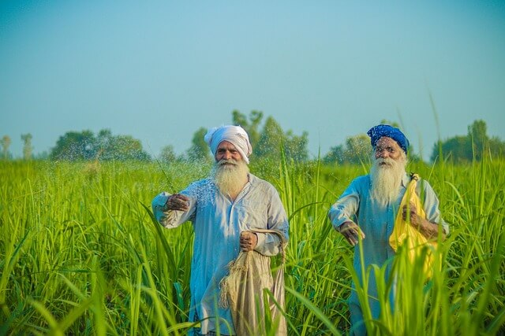
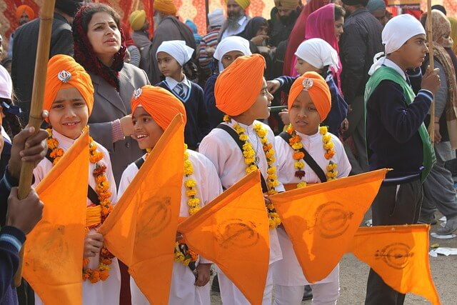
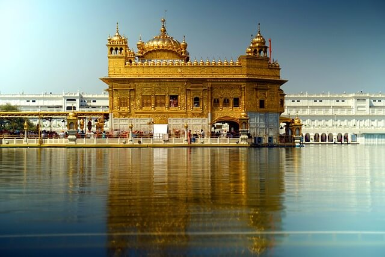

Within a few years of its annexation, Punjab was regarded as British India's model
agricultural province. From the 1860s onwards, agricultural prices and land values soared in the
Punjab.

The birthday of Guru Nanak, the founder of the Sikh religion, comes in the month of
November, but the date varies from year to year according to the lunar Indian calendar. The birthday
celebrations last three days. Punjabi cuisine is a culinary style originating in the Punjab, a region in the northern part
of South Asia, which is now divided into an Indian part to the east and a Pakistani part to the
west. This cuisine has a rich tradition of many distinct and local ways of cooking.

In the Sikh tradition, Guru Ram Das, the fourth Sikh guru, is credited with founding the
holy city of Amritsar.[8][13] Two versions of stories exist regarding the land where Guru Ram Das
settled.